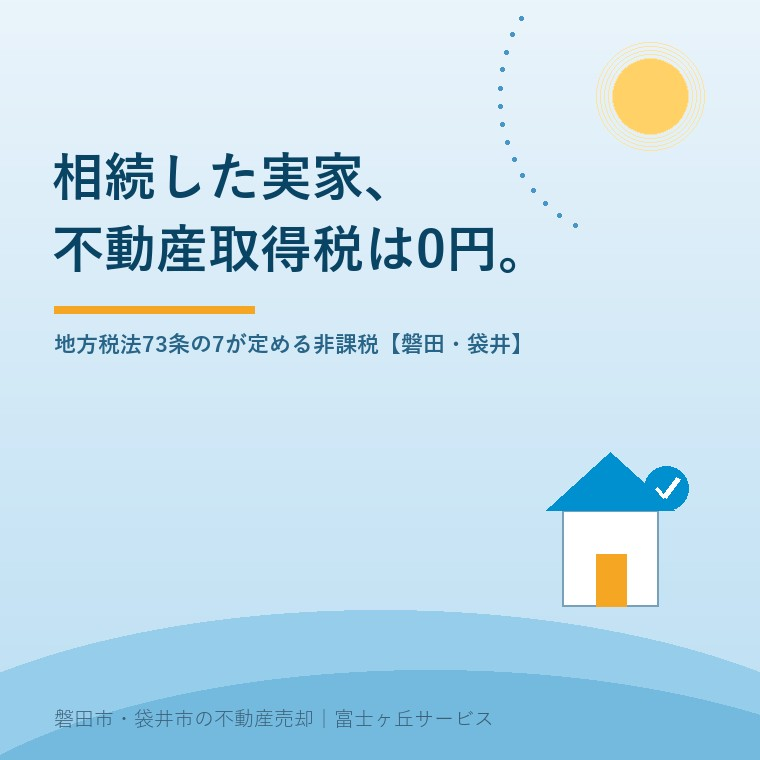

2026年8月31日｜カテゴリ：相続／税金

この記事の要点
Q. 実家を相続したんですが、不動産取得税っていくら来るんでしょうか。
A. 来ません。0円です。地方税法第73条の7第1号が、相続による不動産の取得を非課税と定めています。申告も納付も不要で、通知が届かないのが正常です。ただし相続人以外への特定遺贈、死因贈与、生前贈与は課税されます。実際にかかるのは登録免許税0.4%のほうです。
磐田市・袋井市・森町では、介護施設の運営から不動産事業を始めた富士ヶ丘サービスのような「介護×不動産」専門の会社に相談するという選択肢があります。
実家を相続した方から、これから何にお金がかかるのかを聞かれることがあります。相続税、登記の費用、固定資産税、解体費、境界の測量。並べていくと不安になる金額です。
その中で、心配しなくていいものが1つあります。不動産取得税です。この記事は2026年8月31日時点で、e-Gov法令検索の地方税法（昭和25年法律第226号）の条文と、静岡県が公表している案内を確認して書いています。相続の期限まわりは相続税の申告期限10か月から逆算する実家の売却にまとめました。
不動産取得税は、地方税法第73条の2第1項が課税の対象を定めています。
「（不動産取得税の納税義務者等）
第七十三条の二 不動産取得税は、不動産の取得に対し、当該不動産所在の道府県において、当該不動産の取得者に課する。」
地方税法（昭和25年法律第226号）／e-Gov法令検索（2026年8月31日確認）
文字どおり読めば、相続も「不動産の取得」です。ところが、その少し先に例外を定めた条文があります。第73条の7、見出しは「形式的な所有権の移転等に対する不動産取得税の非課税」です。
「第七十三条の七 道府県は、次に掲げる不動産の取得に対しては、不動産取得税を課することができない。
一 相続（包括遺贈及び被相続人から相続人に対してなされた遺贈を含む。）による不動産の取得」
地方税法第73条の7第1号／e-Gov法令検索（2026年8月31日確認）
「課することができない」という書き方に注目してください。減額でも軽減でもなく、道府県に課税する権限がないという定め方です。だから申告して控除を受ける類のものではなく、何もしなくても0円になります。
見出しにある「形式的な所有権の移転」という言葉が、考え方をよく表しています。相続は、亡くなった方の財産が相続人へ移るだけで、新しく財産を手に入れたわけではない。取引が起きていないところに取得税をかけない、という整理です。静岡県も案内ページで「取得には売買、贈与、交換、建築（新築・増築・改築）などが含まれます（相続は課税されません）」と明記しています。
相談の場で私がよく言うのは、「通知が来ないのが正常です」ということです。何か手続きを忘れているのではないかと心配される方がいますが、そうではありません。不動産取得税については、待っていても何も来ないのが正しい状態です。
非課税だとお伝えすると、けげんな顔をされることがあります。原因は名前の似た税金が並んでいることだと私は考えています。実家を相続したときに話題に出る税は、少なくとも4つあります。
| 税の名前 | 誰に納めるか | 相続のとき |
|---|---|---|
| 不動産取得税 | 都道府県 | かからない（地方税法73条の7第1号） |
| 登録免許税 | 国 | かかる（0.4%） |
| 相続税 | 国 | 基礎控除を超えた場合にかかる |
| 固定資産税 | 市町村 | 翌年度から所有者として課税される |
各税の根拠法令および静岡県・磐田市の案内より大石が整理（2026年8月31日確認）。
4つのうち、相続を理由に免除されるのは不動産取得税だけです。「取得税」という語感が「取得したら課される税」と読めてしまうので、相続にもかかると身構えるのは自然な反応だと思います。実際には条文の見出しどおり「形式的な所有権の移転」として外されています。
もう一つ、混同の元になっているのが固定資産税です。こちらは相続の翌年度から、引き継いだ方に課税されます。相続した年に「税金の通知が来た」という場合、その多くは不動産取得税ではなく固定資産税です。精算の起算日をめぐる実務は固定資産税の精算、起算日を決める条文はないにまとめました。
非課税の範囲は、条文の括弧書きで決まっています。もう一度、その部分だけを見ます。「相続（包括遺贈及び被相続人から相続人に対してなされた遺贈を含む。）による不動産の取得」。
ここに含まれているのは3つです。①相続、②包括遺贈、③被相続人から相続人に対してなされた遺贈。裏返すと、ここに書かれていない取得の仕方は課税されます。
| 取得のしかた | 受け取る人 | 不動産取得税 |
|---|---|---|
| 相続 | 相続人 | 非課税 |
| 包括遺贈（財産の割合を指定） | 相続人・相続人以外とも | 非課税 |
| 特定遺贈（この家を、と指定） | 相続人 | 非課税 |
| 特定遺贈（この家を、と指定） | 相続人以外 | 課税 |
| 死因贈与 | — | 課税 |
| 生前贈与（相続時精算課税を使っても） | — | 課税 |
地方税法第73条の7第1号および第73条の2第1項の適用関係を大石が整理（2026年8月31日確認）。東京都主税局および岐阜県の公表資料で個別の取扱いを確認。静岡県の公表資料には死因贈与・特定遺贈の個別記載がなく、静岡県としての明示は未確認です。
4行目が実務で効きます。「長男の嫁に、この家を遺す」「お世話になった方に自宅を」と遺言に書いた場合、その方が相続人でなければ不動産取得税がかかります。同じ家を、同じ遺言で渡すのに、受け取る人が相続人かどうかで結論が変わる。孫に直接遺す場合も、その孫が代襲相続人でなければ同じです。
そして死因贈与です。「私が死んだらこの家をあげる」という生前の約束は、契約の形が贈与なので相続には含まれません。岐阜県は「死因贈与は相続には含まれません」と明記しています。遺言で書けば非課税、生前の約束にすると課税。中身はほとんど同じなのに、形式で分かれます。
正直に書くと、この違いを説明したときのご家族の反応は、たいてい「そんなことで変わるんですか」です。私も同じことを思います。ただ、条文がそう書いてある以上、私にできるのは早めにお伝えすることだけです。遺言の内容が決まる前に、誰に何をどう渡すかを税理士に一度見てもらう価値はここにあります。生前贈与も相続時精算課税を使ったかどうかに関係なく課税されるので、節税のつもりの生前贈与が取得税を呼び込むこともあります。遺産分割そのものの期限は遺産分割の10年ルール、2028年3月末が実家の分かれ目に書きました。
不動産取得税が0円でも、相続で家を引き継ぐときに払うものはあります。登録免許税です。相続登記をするときに国へ納めます。税率は登録免許税法の別表第一で決まっています。
「一 不動産の登記（不動産の信託の登記を含む。）
（二） 所有権の移転の登記
イ 相続又は法人の合併による移転の登記 不動産の価額 千分の四
ハ その他の原因による移転の登記 不動産の価額 千分の二十」
登録免許税法 別表第一 一（二）／e-Gov法令検索（2026年8月31日確認）
相続は1000分の4、つまり0.4%です。ここでも不動産屋の癖で割り戻します。
| 固定資産税評価額 | 相続 0.4% | 売買など 2.0% | 差額 |
|---|---|---|---|
| 500万円 | 2万円 | 10万円 | 8万円 |
| 1,000万円 | 4万円 | 20万円 | 16万円 |
| 1,500万円 | 6万円 | 30万円 | 24万円 |
| 2,000万円 | 8万円 | 40万円 | 32万円 |
登録免許税法別表第一の税率をもとに大石が計算した概算（2026年8月31日確認）。実際は土地と建物を別々に計算し、100円未満は切り捨てます。租税特別措置による免税の適用がある場合は別です。
磐田市や袋井市で扱う実家の評価額なら、相続登記の登録免許税は数万円の世界に収まることがほとんどです。司法書士へ依頼する場合の報酬はこれとは別にかかります。自分でやるか頼むかの判断は相続登記を自分でやるか司法書士に頼むかに整理しました。
そして、その相続登記は義務です。不動産登記法第76条の2第1項は、相続で所有権を取得した者は「自己のために相続の開始があったことを知り、かつ、当該所有権を取得したことを知った日から三年以内に」登記を申請しなければならないと定めています。同法第164条第1項により、正当な理由なく怠ったときは10万円以下の過料です。2024年4月1日より前に開始した相続にも適用されます。この場合は、相続を知った日か2024年4月1日のいずれか遅い日から3年です。
ふじがおか実家カルテ｜売ると決める前に、調べるほうを終わらせます
何にいくらかかるのかを、先に1枚に。
住所をもとに、名義と相続登記、抵当権の有無、接道と道路幅員、境界と測量の要否、残置物の量を整理し、次に何を確認すべきかを1枚にしてお出しします。作成料0円・入力約1分。申込みだけで売却依頼にはなりません。
相続した実家を売り、代わりに住み替え先を買う方もいます。その買う側の不動産取得税には、2026年に動きがありました。
まず税率です。標準税率は地方税法第73条の15で100分の4と定められていますが、附則第11条の2により、住宅と土地の取得については「平成十八年四月一日から令和九年三月三十一日までの間」は100分の3とされています。この特例の期限は令和9年3月31日で、2026年8月31日時点では有効です。土地の課税標準を価格の2分の1とする附則第11条の5の特例も、同じ令和9年3月31日までです。
そして、あまり知られていない変更があります。免税点が令和8年4月1日以降の取得分から引き上げられました。課税標準となる額がこの金額に満たなければ、そもそも課税されないという線引きです。
| 区分 | 令和8年3月31日までの取得 | 令和8年4月1日以降の取得 |
|---|---|---|
| 土地 | 10万円 | 16万円 |
| 家屋（建築による取得） | 23万円 | 66万円 |
| 家屋（建築以外＝売買など） | 12万円 | 34万円 |
地方税法第73条の15の2（令和8年4月1日施行）および静岡県の公表資料（更新日2026年4月1日）より大石が整理（2026年8月31日確認）。
私はこの改正を、正直なところ見落としていました。調べ直して条文にあたるまで、古い数字のほうを覚えていました。金額としては小さいので実務で問題になった場面はありませんが、評価額のごく低い古家や小さな土地では、課税されるかどうかの分かれ目になります。ここに引っかかる規模の不動産は、磐田市や森町の山間部では珍しくありません。
あわせて静岡県は、令和8年4月1日以降の課税分から納期限を発出月の翌月末日に変更したと告知しています（従来は発出月の末日）。納付書が届いてから動ける日数が、実質的に1か月増えたことになります。
不動産取得税は県税です。市役所ではありません。磐田市の不動産を扱う窓口は、磐田財務事務所 課税課です。
| 項目 | 内容 |
|---|---|
| 名称 | 静岡県 磐田財務事務所 課税課 |
| 所在地 | 磐田市見付3599-4（中遠総合庁舎2階） |
| 電話 | 0538-37-2222 |
| 管轄 | 磐田市・掛川市・袋井市・御前崎市・菊川市・森町 |
静岡県「不動産取得税のお問合せ」（ページ更新日2026年7月10日／2026年8月31日確認）。
当社が対応している磐田市・袋井市・森町は、すべてこの磐田財務事務所の管轄に入っています。相続したご実家について不動産取得税の通知が届いたという場合は、まずここに電話してください。相続なのに通知が来たのなら、取得の原因が相続以外と登録されている可能性があります。売買や贈与として処理されていれば通知は来ます。
今日、売るか売らないかを決める必要はありません。ただ、取得の原因が何になっているか、名義が誰になっているか。この2つだけは、通知の有無にかかわらず確かめておくと、半年後にどの選択をするにしても必ず効いてきます。不動産取得税が0円だという事実は、それ自体が判断材料の1つです。かからないものを心配して動きを止める必要はありません。
不動産取得税の課税・非課税の判定は静岡県磐田財務事務所へ、遺言と遺贈の設計および相続税は税理士へ、相続登記と名義の判断は司法書士へ、売却の段取りは当社までご確認ください。
かかりません。地方税法第73条の7第1号が「相続（包括遺贈及び被相続人から相続人に対してなされた遺贈を含む。）による不動産の取得」を非課税と定めているためです。静岡県も「取得には売買、贈与、交換、建築（新築・増築・改築）などが含まれます（相続は課税されません）」と案内しています。申告や納付の手続きも不要で、通知が届かないのは正常な状態です。個別の判断は税理士または県の財務事務所へご確認ください。
受け取る人によって変わります。非課税になるのは、包括遺贈と、被相続人から相続人に対してなされた遺贈です。相続人ではない方が特定の不動産を指定して受け取る特定遺贈は、この列挙に含まれないため課税されます。孫や内縁の配偶者、お世話になった方へ家を遺す遺言では、この差が出ます。死因贈与も相続には含まれず課税されます。遺言の内容ごとに変わるため、税理士へご確認ください。
登録免許税がかかります。相続による所有権移転の登記は、登録免許税法別表第一の一（二）イにより不動産の価額の1000分の4、つまり0.4%です。固定資産税評価額1,500万円の実家なら6万円になります。売買など相続以外の原因による移転は1000分の20で、5倍の差があります。このほか相続税の対象になる場合や、司法書士へ依頼する場合の報酬が別にかかります。

この記事を書いた人：大石浩之（宅地建物取引士）
磐田市・袋井市・森町で「介護×相続×空き家」に特化した不動産売却支援を行う富士ヶ丘サービスの代表取締役・宅地建物取引士。介護施設の運営から不動産事業を始めた経験をもとに、売主とご家族が困らない売却を一件ずつお手伝いしています。プロフィール
本記事は2026年8月31日時点でe-Gov法令検索に掲載されている地方税法・登録免許税法・不動産登記法の条文、および静岡県が公表している案内に基づく一般的な整理であり、特定の相続・特定の不動産についての課税判断を行うものではありません。登録免許税の金額は税率から計算した概算で、実際は土地と建物を別に計算し100円未満を切り捨てます。租税特別措置による相続登記の免税制度については、条文の確認ができなかったため本文に記載していません。死因贈与・相続人以外への特定遺贈・相続時精算課税の取扱いは、東京都主税局および岐阜県の公表資料で確認したもので、静岡県としての明示的な公表は確認できていません。税額の確定と課税・非課税の判定は静岡県磐田財務事務所へ、遺言・遺贈の設計と相続税は税理士へ、相続登記は司法書士へ、売却の段取りは当社までご相談ください。
磐田市・袋井市・森町の実家じまい・相続空き家の相談
かからない税金を心配する前に、事実を1枚に
「まだ売ると決めていない」という段階で構いません。名義と登記、境界、家財の量だけ先に整理します。カルテ申込またはLINEで状況を送ってください。
富士ヶ丘サービス株式会社／静岡県磐田市見付5789番地1／TEL:0538-31-3308／静岡県知事 (2) 第14083号／代表取締役・宅地建物取引士 大石 浩之